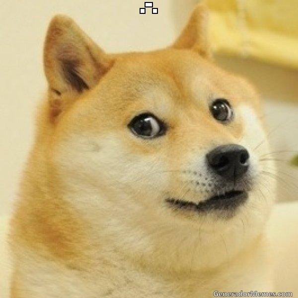

<ion-view hide-back-button="true" view-title="Pets">
    <ion-nav-buttons side="right">
        <button class="button" ng-click="doGoPostPet()">Add a pet</button>
    </ion-nav-buttons>
    <ion-nav-buttons side="left">
        <button class="button button-icon button-clear ion-navicon" menu-toggle="left">
        </button>
    </ion-nav-buttons>
    <ion-content>
        <ion-item ng-repeat="pet in pets" class="item item-avatar" href="#/app/pets/{{pet._id}}">
            
            <div class="div_pets_info">
                <h2>{{pet.name}}, <span class="label_pets_locale">{{pet.country}}, {{pet.city}}</span></h2>
                <p> {{pet.description}}</p>
                <p> <b>Age:</b> {{pet.age}}, <b>Color:</b> {{pet.color}}</p>
                <span class="badge badge-positive">
                {{pet.status}}
                </span>
            </div>
        </ion-item>
        <div class="card" ng-if="!pets.length">
            <div class="item item-text-wrap">
                Pet has not posted yet.
            </div>
        </div>
    </ion-content>
</ion-view>